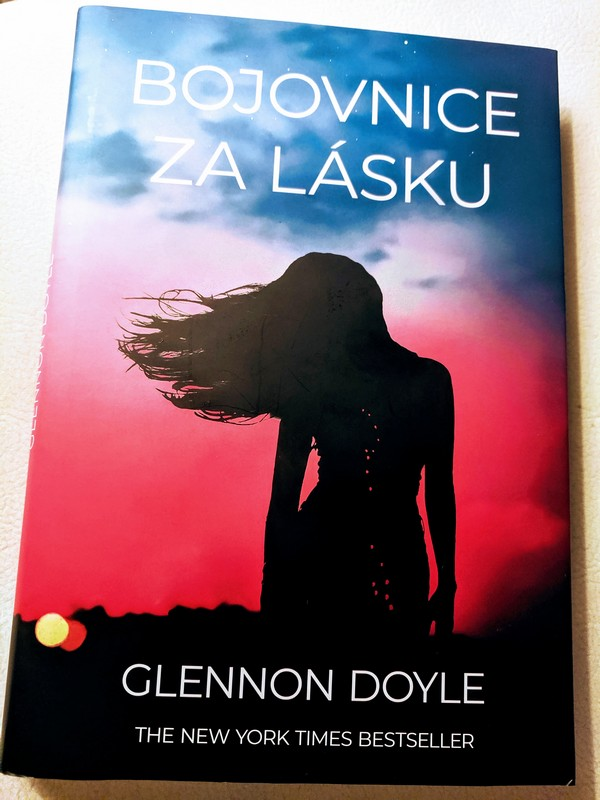

Už se mi do rukou opravdu dlouho nedostal žádný “motivační” titul z žánru seberozvoje. Bojovnice za lásku se v tomto směru nachází tak trochu na pomezí, jedná se totiž o autobiografii, v níž je ale víc než dost prostoru věnováno myšlenkovým pochodům a pocitům hlavní postavy, která bojuje se sebepřijetím a prochází manželskou krizí.
Co jsem dnes prožila? Ten den byl dlouhý jako celý život. Byl ze všeho nejlepší i ze všeho nejhorší. Byla jsem osamělá, a přitom jsem nezůstala ani na okamžik sama. Smrtelně jsem se nudila a současně mě to úplně drtilo. Byla jsem přesycená doteky - zoufale jsem toužila, aby mě miminko nechalo na pokoji, ale jakmile jsem ho odložila, hned jsem zatoužila znovu čichat jeho milou vůni. Tenhle den ode mě žádal víc, než kolik jsem toho schopná fyzicky i emocionálně obsáhnout, a přitom vůbec nezaměstnal můj mozek.
Hned na úvod jeden hezký citát, kterým Glennon - sama matka tří dětí - trefně glosuje atmosféru života na mateřské (A to je v USA mnohem kratší než tady u nás - chce se mi na to odpovědět :-))…) Ale teď už k samotné knize.
Glennon prakticky od dětství prochází šílenými zkušenostmi - nejprve bulimie, později alkoholismus, dobrovolný potrat… Celá úvodní část knihy, kde popisuje tyto zážitky, je dost těžce stravitelným soustem. Musím říct, že jsem vlastně ani moc nepochopila, jak mohla do něčeho takového spadnout, protože z jejího popisu měla báječné rodinné zázemí. Celkově pro mne byla Glennon tak neuchopitelnou postavou, že ani nedokážu říct, že bych jí na její cestě k “osvobození” nějak zvlášť fandila.
Kdo mně ale vrtal hlavou mnohem víc, byla postava jejího manžela Craiga, který se v knize několikrát projevil jako někdo, koho by každá soudná žena měla poslat do háje, po odhalení jeho nevěry ale zase začal z vyprávění Glennon působit jako muž snů… Moc nevím, co si o jeho charakteru myslet a naprosto se mi nechce věřit, že by někdo mohl projít takovým morálním “prozřením”. Možná jsem moc skeptik :-)
Tak či tak mě tato kniha bohužel úplně neoslovila. Nějak nesouzním s tím, že se konkrétní manželský příběh dvou konkrétních lidí zobecňuje na nějaké stereotypní pravdy o mužích a ženách. Já čekala od Bojovnice za lásku něco hlubšího - tohle bylo na mě až moc “americké”, a to včetně poněkud kýčovitého happy endu…
